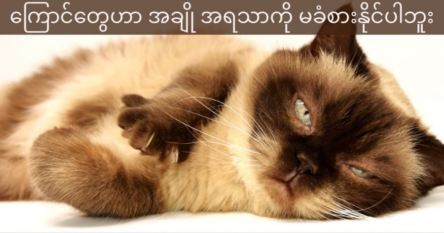

ကြောင်တွေဟာ အချိုအရသာကို ခံစားနိုင်ခြင်း မရှိပါဘူး။
ကြောင်တွေဟာ တကယ်တော့ လူတွေလိုပဲ အချို၊ အချဉ်၊ အငန် နဲ့ အခါး အရသာ ခံစားနိုင်တဲ့ အရသာ အာရုံခံ (Taste Buds) တွေ ၄ မျိုးလုံး ရှိကြပါတယ်။
ဒါပေမယ့် လူ့လျှာမှာ အရသာခံ taste buds ၉,၀၀၀ ကျော် ရှိပေမယ့် ကြောင်တွေရဲ့ လျှာပေါ်မှာတော့ အရသာခံ taste buds အရေအတွက် စုစုပေါင်း ၄၇၃ ခုပဲ ပါရှိပါတယ်။
အသားပဲ စားတဲ့ သတ္တဝါတွေမို့ ကြောင်တွေရဲ့ အချို အရသာ အာရုံခံနိုင်မှုက လုံးဝ မရှိသလောက် နီးပါး ဖြစ်သွားတာ ဖြစ်ပါတယ်။ ဒါ့ကြောင့် အချိုအာရုံခံ taste buds အနည်းအကျဉ်း ရှိပေမယ့် အချိုအရသာကို မခံစားနိုင်တာပဲ ဖြစ်ပါတယ်။
ဒါနဲ့ ဆက်စပ်ပြီး ပြောရရင် ကြောင်တွေရဲ့ လျှာမှာ အရသာခံ taste buds အရေအတွက် နည်းလွန်းတဲ့ အတွက် ကြောင်တွေဟာ အစားအစာရဲ့ အရသာကို သိပ်ပြီး ခံစားနိုင်ခြင်း မရှိပါဘူးတဲ့။
ဒါပေမယ့် ကြောင်တွေမှာ အရမ်းကောင်းမွန်တဲ့ အနံ့ခံ အာရုံကို ပိုင်ဆိုင်ထားကြပါတယ်။
ဒါ့ကြောင့် အစာစားတဲ့ အခါ အရသာ သိပ်မသိပေမယ့် အစာရဲ့ အနံခံပြီး အရသာခံ စားတာ ဖြစ်ပါတယ်လို့ ကြောင်အကြောင်း လေ့လာနေတဲ့ သူတေသီတွေက ပြောပါတယ်။
အချိုအရသာ မခံနိုင်တဲ့ ကြောင်လေးတွေ

July 1, 2021
Other Posts
- Phonics ဖိုးနစ်နည်းနဲ့ အင်္ဂလိပ်စာ သင်မယ်
- Dark Energy ရှာတွေ့ပြီလား
- James Webb တယ်လီစကုပ် ကြီးရဲ့ ပင်မကြေးမုံ အောင်မြင်စွာ ဖြန့်ချနိုင်ခဲ့ပြီ
- စွန့်ပစ် ပလတ်စတစ်နဲ့ လုပ်တဲ့ အုတ်ခဲ
- မိမိကလေးရဲ့ ကိုယ့်ကိုယ်ကို တန်ဖိုးထားမှုကို မြှင့်တင်ပေးနိုင်မယ့် ရှင်းလင်းလွယ်ကူတဲ့ နည်းလမ်း ၈ ချက်
- ဇန်နဝါရီ လထဲ ပြန်ပေါ်လာမယ့် ရေခဲခေတ်က ကြယ်တံခွန်
- ငှက်ပျောခွံမှ ဟိုက်ဒြိုဂျင် လောင်စာထုတ်နည်းသစ်
- James Webb တယ်လီစကုပ်ကြီး ပတ်လမ်းပေါ် ရောက်ပြီ
- ရှည်မျောမျောနဲ့ ထူးထူးဆန်းဆန်း ဂြိုဟ် ရှာဖွေတွေ့ရှိ
- ကိုယ်ပျောက်လေယာဉ်တွေအတွက် ကြီးမားတဲ့ ခြိမ်းခြောက်မှု ဖြစ်လာနိုင်တဲ့ S-500 လေကြောင်းရန် ကာကွယ်ရေးစနစ်သစ်